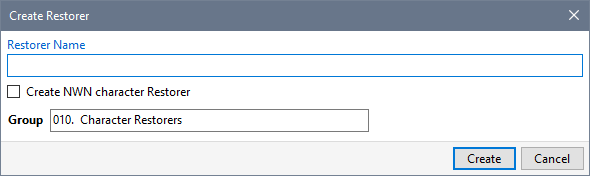
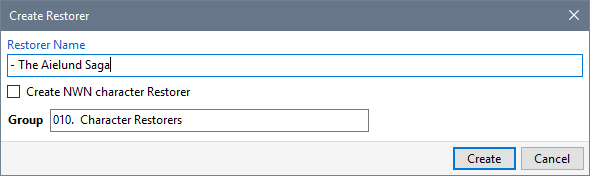
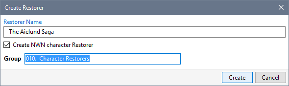
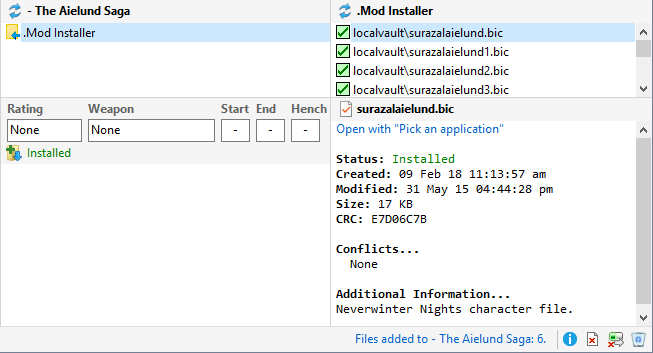

You can use Restorers to keep track of the character builds you used for the different Mods you have played.

The procedure below can be automated by enabling Create Character Restorers automatically on the Preferences page in Advanced Settings. You can specify your own Character Restorer Mod Name Prefix on the Configuration page in Advanced Settings.
- When you have finished playing a game, click Create Restorer from the Manage menu.

- Type in the name of your character Restorer. I usually prefix the Mod name with a hyphen (-) to make a unique name associated with the Mod.

- Tick (check) Create NWN character Restorer to ensure that only character files (bic) are included in your Restorer. This option is only displayed when there are unowned character files in your Installation or User Files folder.
- Select the Group that you want to use and click Create.

- The character Restorer is created and selected in the Mod List.

You can use the Mod Notes to record any information you want to remember about your character build.
Related Topics
Create Restorers
Update Restorers
Create Character Restorers
Remove installed files
Create Original Restorers